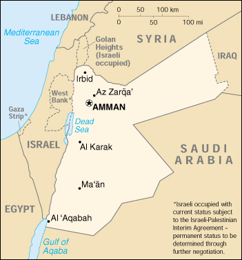

|
Jordan | |
| Introduction Geography People Government Economy Communications Transportation Military Transnational Issues | ||
|  | ||
| Jordan | Introduction | Top of Page |
| Background: | For most of its history since independence from British administration in 1946, Jordan was ruled by King HUSSEIN (1953-1999). A pragmatic ruler, he successfully navigated competing pressures from the major powers (US, USSR, and UK), various Arab states, Israel, and a large internal Palestinian population, through several wars and coup attempts. In 1989 he resumed parliamentary elections and gradually permitted political liberalization; in 1994 a formal peace treaty was signed with Israel. King ABDALLAH II - the eldest son of King HUSSEIN and Princess MUNA - assumed the throne following his father's death in February 1999. Since then, he has consolidated his power and established his domestic priorities. |
| Jordan | Geography | Top of Page |
| Location: | Middle East, northwest of Saudi Arabia |
| Geographic coordinates: | 31 00 N, 36 00 E |
| Map references: | Middle East |
| Area: |
total:
92,300 sq km
land: 91,971 sq km water: 329 sq km |
| Area - comparative: | slightly smaller than Indiana |
| Land boundaries: |
total:
1,619 km
border countries: Iraq 181 km, Israel 238 km, Saudi Arabia 728 km, Syria 375 km, West Bank 97 km |
| Coastline: | 26 km |
| Maritime claims: | territorial sea: 3 NM |
| Climate: | mostly arid desert; rainy season in west (November to April) |
| Terrain: | mostly desert plateau in east, highland area in west; Great Rift Valley separates East and West Banks of the Jordan River |
| Elevation extremes: |
lowest point:
Dead Sea -408 m
highest point: Jabal Ram 1,734 m |
| Natural resources: | phosphates, potash, shale oil |
| Land use: |
arable land:
4%
permanent crops: 1% permanent pastures: 9% forests and woodland: 1% other: 85% (1993 est.) |
| Irrigated land: | 630 sq km (1993 est.) |
| Natural hazards: | droughts |
| Environment - current issues: | limited natural fresh water resources; deforestation; overgrazing; soil erosion; desertification |
| Environment - international agreements: |
party to:
Biodiversity, Climate Change, Desertification, Endangered Species, Hazardous Wastes, Law of the Sea, Marine Dumping, Nuclear Test Ban, Ozone Layer Protection, Wetlands
signed, but not ratified: none of the selected agreements |
| Jordan | People | Top of Page |
| Population: | 5,153,378 (July 2001 est.) |
| Age structure: |
0-14 years:
37.23% (male 980,345; female 938,081)
15-64 years: 59.44% (male 1,633,579; female 1,429,631) 65 years and over: 3.33% (male 84,815; female 86,927) (2001 est.) |
| Population growth rate: | 3% (2001 est.) |
| Birth rate: | 25.44 births/1,000 population (2001 est.) |
| Death rate: | 2.62 deaths/1,000 population (2001 est.) |
| Net migration rate: | 7.18 migrant(s)/1,000 population (2001 est.) |
| Sex ratio: |
at birth:
1.06 male(s)/female
under 15 years: 1.05 male(s)/female 15-64 years: 1.14 male(s)/female 65 years and over: 0.98 male(s)/female total population: 1.1 male(s)/female (2001 est.) |
| Infant mortality rate: | 20.36 deaths/1,000 live births (2001 est.) |
| Life expectancy at birth: |
total population:
77.53 years
male: 75.1 years female: 80.12 years (2001 est.) |
| Total fertility rate: | 3.29 children born/woman (2001 est.) |
| HIV/AIDS - adult prevalence rate: | 0.02% (1999 est.) |
| HIV/AIDS - people living with HIV/AIDS: | NA |
| HIV/AIDS - deaths: | NA |
| Nationality: |
noun:
Jordanian(s)
adjective: Jordanian |
| Ethnic groups: | Arab 98%, Circassian 1%, Armenian 1% |
| Religions: | Sunni Muslim 92%, Christian 6% (majority Greek Orthodox, but some Greek Catholics, Roman Catholics, Syrian Orthodox, Coptic Orthodox, Armenian Orthodox, and Protestant denominations), other 2% (several small Shi'a Muslim and Druze populations) (2000 est.) |
| Languages: | Arabic (official), English widely understood among upper and middle classes |
| Literacy: |
definition:
age 15 and over can read and write
total population: 86.6% male: 93.4% female: 79.4% (1995 est.) |
| Jordan | Government | Top of Page |
| Country name: |
conventional long form:
Hashemite Kingdom of Jordan
conventional short form: Jordan local long form: Al Mamlakah al Urduniyah al Hashimiyah local short form: Al Urdun former: Transjordan |
| Government type: | constitutional monarchy |
| Capital: | Amman |
| Administrative divisions: | 12 governorates (muhafazat, singular - muhafazah); Ajlun, Al 'Aqabah, Al Balqa', Al Karak, Al Mafraq, 'Amman, At Tafilah, Az Zarqa', Irbid, Jarash, Ma'an, Madaba |
| Independence: | 25 May 1946 (from League of Nations mandate under British administration) |
| National holiday: | Independence Day, 25 May (1946) |
| Constitution: | 8 January 1952 |
| Legal system: | based on Islamic law and French codes; judicial review of legislative acts in a specially provided High Tribunal; has not accepted compulsory ICJ jurisdiction |
| Suffrage: | 20 years of age; universal |
| Executive branch: |
chief of state:
King ABDALLAH II (since 7 February 1999); Crown Prince HAMZAH (half brother of the monarch, born 29 March 1980)
head of government: Prime Minister Ali Abul RAGHEB (since 19 June 2000) cabinet: Cabinet appointed by the prime minister in consultation with the monarch elections: none; the monarch is hereditary; prime minister appointed by the monarch |
| Legislative branch: |
bicameral National Assembly or Majlis al-'Umma consists of the Senate (a 40-member body appointed by the monarch from designated categories of public figures; members serve four-year terms) and the House of Representatives (80 seats; members elected by popular vote on the basis of proportional representation to serve four-year terms)
elections: House of Representatives - last held 4 November 1997 (next to be held NA November 2001) election results: House of Representatives - percent of vote by party - NA%; seats by party - National Constitutional Party 2, Arab Land Party 1, independents 75, other 2 note: the House of Representatives has been convened and dissolved by the monarch several times since 1974; in November 1989 the first parliamentary elections in 22 years were held |
| Judicial branch: | Court of Cassation; Supreme Court (court of final appeal) |
| Political parties and leaders: | Al-Umma (Nation) Party [Ahmad al-HANANDEH, secretary general]; Arab Land Party [Dr. Muhammad al-'ORAN, secretary general]; Jordanian Democratic Popular Unity Party [Sa'eed THIYAB, secretary general]; National Constitutional Party [Abdul Hadi MAJALI, secretary general] |
| Political pressure groups and leaders: | Council of Professional Association Presidents [Ahmad al-QADIRI, chairman]; Jordanian Press Association [Sayf al-SHARIF, president]; Muslim Brotherhood [Abd-al-Majid DHUNAYBAT, secretary general] |
| International organization participation: | ABEDA, ACC, AFESD, AL, AMF, CAEU, CCC, ESCWA, FAO, G-77, IAEA, IBRD, ICAO, ICC, ICFTU, ICRM, IDA, IDB, IFAD, IFC, IFRCS, ILO, IMF, IMO, Intelsat, Interpol, IOC, IOM, ISO (correspondent), ITU, MINURSO, MONUC, NAM, OIC, OPCW, OSCE (partner), PCA, UN, UNAMSIL, UNCTAD, UNESCO, UNIDO, UNMEE, UNMIBH, UNMIK, UNMOP, UNMOT, UNOMIG, UNRWA, UNTAET, UPU, WFTU, WHO, WIPO, WMO, WToO, WTrO |
| Diplomatic representation in the US: |
chief of mission:
Ambassador Marwan Jamil MUASHER
chancery: 3504 International Drive NW, Washington, DC 20008 telephone: [1] (202) 966-2664 FAX: [1] (202) 966-3110 |
| Diplomatic representation from the US: |
chief of mission:
Ambassador William J. BURNS
embassy: Abdoum, Amman mailing address: P. O. Box 354, Amman 11118 Jordan; APO AE 09892-0200 telephone: [962] (6) 5920101 FAX: [962] (6) 5920121 |
| Flag description: | three equal horizontal bands of black (top, the Abbassid Caliphate of Islam), white (the Ummayyad Caliphate of Islam), and green (the Fatimid Caliphate of Islam) with a red isosceles triangle (representing the Great Arab Revolt of 1916) based on the hoist side bearing a small white seven-pointed star symbolizing the seven verses of the opening Sura (Al-Fatiha) of the Holy Koran; the seven points on the star represent faith in One God, humanity, national spirit, humility, social justice, virtue, and aspirations |
| Jordan | Economy | Top of Page |
| Economy - overview: | Jordan is a small Arab country with inadequate supplies of water and other natural resources such as oil. The Persian Gulf crisis, which began in August 1990, aggravated Jordan's already serious economic problems, forcing the government to stop most debt payments and suspend rescheduling negotiations. Aid from Gulf Arab states, worker remittances, and trade revenues contracted. Refugees flooded the country, producing serious balance-of-payments problems, stunting GDP growth, and straining government resources. The economy rebounded in 1992, largely due to the influx of capital repatriated by workers returning from the Gulf. After averaging 9% in 1992-95, GDP growth averaged only 1.5% during 1996-99. In an attempt to spur growth, King ABDALLAH has undertaken limited economic reform, including partial privatization of some state-owned enterprises and Jordan's entry in January 2000 into the World Trade Organization (WTrO). Debt, poverty, and unemployment are fundamental ongoing economic problems. |
| GDP: | purchasing power parity - $17.3 billion (2000 est.) |
| GDP - real growth rate: | 2% (2000 est.) |
| GDP - per capita: | purchasing power parity - $3,500 (2000 est.) |
| GDP - composition by sector: |
agriculture:
3%
industry: 25% services: 72% (1998 est.) |
| Population below poverty line: | 30% (1998 est.) |
| Household income or consumption by percentage share: |
lowest 10%:
2.4%
highest 10%: 34.7% (1991) |
| Inflation rate (consumer prices): | 0.7% (2000 est.) |
| Labor force: |
1.15 million
note: in addition, at least 300,000 workers are employed abroad (1997 est.) |
| Labor force - by occupation: | industry 11.4%, commerce, restaurants, and hotels 10.5%, construction 10%, transport and communications 8.7%, agriculture 7.4%, other services 52% (1992) |
| Unemployment rate: | 15% official rate; actual rate is 25%-30% (1999 est.) |
| Budget: |
revenues:
$2.8 billion
expenditures: $3.1 billion, including capital expenditures of $NA (2000 est.) |
| Industries: | phosphate mining, petroleum refining, cement, potash, light manufacturing, tourism |
| Industrial production growth rate: | 3.8% (2000 est.) |
| Electricity - production: | 6.657 billion kWh (1999) |
| Electricity - production by source: |
fossil fuel:
99.79%
hydro: 0.21% nuclear: 0% other: 0% (1999) |
| Electricity - consumption: | 6.594 billion kWh (1999) |
| Electricity - exports: | 4 million kWh (1999) |
| Electricity - imports: | 407 million kWh (1999) |
| Agriculture - products: | wheat, barley, citrus, tomatoes, melons, olives; sheep, goats, poultry |
| Exports: | $2 billion (f.o.b., 2000 est.) |
| Exports - commodities: | phosphates, fertilizers, potash, agricultural products, manufactures |
| Exports - partners: | India, Iraq, Saudi Arabia, EU, Indonesia, UAE, Lebanon, Kuwait, Syria, Ethiopia |
| Imports: | $4 billion (f.o.b., 2000 est.) |
| Imports - commodities: | crude oil, machinery, transport equipment, food, live animals, manufactured goods |
| Imports - partners: | Iraq, Germany, US, Japan, UK, Italy, Turkey, Malaysia, Syria, China |
| Debt - external: | $8 billion (2000 est.) |
| Economic aid - recipient: | ODA, $850 million (1996 est.) |
| Currency: | Jordanian dinar (JOD) |
| Currency code: | JOD |
| Exchange rates: |
Jordanian dinars per US dollar - 0.7090 (1996-present )
note: since May 1989, the Jordanian dinar has been pegged to a group of currencies |
| Fiscal year: | calendar year |
| Jordan | Communications | Top of Page |
| Telephones - main lines in use: | 403,000 (1997) |
| Telephones - mobile cellular: | 11,500 (1995) |
| Telephone system: |
general assessment:
service has improved recently with the increased use of digital switching equipment, but better access to the telephone system is needed in the rural areas and easier access to pay telephones is needed by the urban public
domestic: microwave radio relay transmission and coaxial and fiber-optic cable are employed on trunk lines; considerable use is made of mobile cellular systems; Internet service is available international: satellite earth stations - 3 Intelsat, 1 Arabsat, and 29 land and maritime Inmarsat terminals; fiber-optic cable to Saudi Arabia and microwave radio relay link with Egypt and Syria; connection to international submarine cable FLAG (Fiber-Optic Link Around the Globe); participant in MEDARABTEL; international links total about 4,000 |
| Radio broadcast stations: | AM 6, FM 5, shortwave 1 (1999) |
| Radios: | 1.66 million (1997) |
| Television broadcast stations: | 20 (plus 96 repeaters) (1995) |
| Televisions: | 500,000 (1997) |
| Internet country code: | .jo |
| Internet Service Providers (ISPs): | 5 (2000) |
| Internet users: | 87,500 (2000) |
| Jordan | Transportation | Top of Page |
| Railways: |
total:
677 km
narrow gauge: 677 km 1.050-m gauge (2000) |
| Highways: |
total:
8,000 km
paved: 8,000 km unpaved: 0 km (2000 est.) |
| Waterways: | none |
| Pipelines: | crude oil 209 km; note - may not be in use |
| Ports and harbors: | Al 'Aqabah |
| Merchant marine: |
total:
6 ships (1,000 GRT or over) totaling 40,919 GRT/57,777 DWT
ships by type: bulk 1, cargo 3, container 1, roll on/roll off 1 (2000 est.) |
| Airports: | 18 (2000 est.) |
| Airports - with paved runways: |
total:
15
over 3,047 m: 7 2,438 to 3,047 m: 6 914 to 1,523 m: 1 under 914 m: 1 (2000 est.) |
| Airports - with unpaved runways: |
total:
3
under 914 m: 3 (2000 est.) |
| Heliports: | 1 (2000 est.) |
| Jordan | Military | Top of Page |
| Military branches: | Jordanian Armed Forces (JAF; includes Royal Jordanian Land Force, Royal Naval Force, and Royal Jordanian Air Force); Ministry of the Interior's Public Security Force (falls under JAF only in wartime or crisis situations) |
| Military manpower - military age: | 18 years of age |
| Military manpower - availability: | males age 15-49: 1,458,571 (2001 est.) |
| Military manpower - fit for military service: | males age 15-49: 1,034,109 (2001 est.) |
| Military manpower - reaching military age annually: | males: 57,131 (2001 est.) |
| Military expenditures - dollar figure: | $608.9 million (FY98/99) |
| Military expenditures - percent of GDP: | 7.8% (FY98/99) |
| Jordan | Transnational Issues | Top of Page |
| Disputes - international: | none |
{kind=link}
{kind=link}